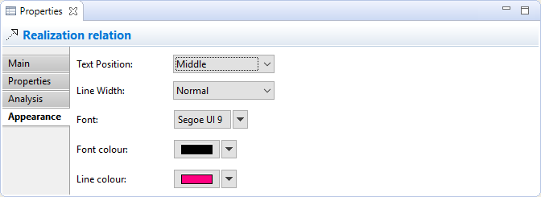

Selecting an ArchiMate Relationship in a View means that you can edit or view additional visual properties in the Properties Window. Different visual settings can be applied to a relationship for each separate occurrence in a View. For example, the relationship "Used By" may be coloured black in one View, and blue in another View.
The Appearance Tab
Appearance Properties for a Relationship in a View
This tab is only available when a relationship is selected in a View.
| Show Label: | If selected will show the label if the relationship's text is set. |
| Text Position: | Sets the position of the text that will appear next to the connection on the View. Options are "Source", "Middle" and "Target". |
| Line Colour: | Sets the colour of the connection. Click on the main part of the button to set the colour. The "Default" drop-down option sets the line colour to the default setting as set in Preferences. |
| Line Width: | Sets the width of the connection. Options are "Normal", "Medium" and "Heavy". |
| Text Alignment: | Align text to Left, Centred or Right. |
| Font: | Sets the font. Click on the main part of the button to set the font. The "Default" drop-down option sets the font to the default setting as set in Preferences. |
| Font Colour: | Sets the colour of the font. Click on the main part of the button to set the colour. The "Default" drop-down option sets the font colour to its default. |
The Label Tab

Adding a Label Expression to display in the View
This tab is only available when a relationship is selected in a View.
By default, a relationship's name will be displayed in any View in which it appears. Using a label expression per View instance, you can choose what is displayed for the relationship in the View. For example you may wish to display the relationship's name and its type. Or you may wish to display the value of one or more of its properties.
For a full list of expression types please refer to the Archi Wiki.